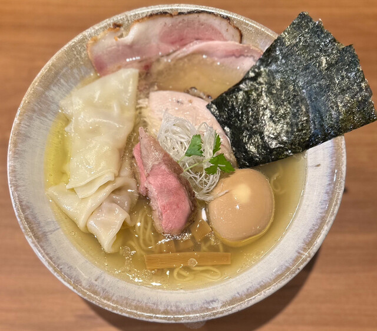

池袋といえば学生の街！駅周辺にも沢山の安くて美味しいラーメン屋があります。ということで今回は、池袋駅周辺にある本当に美味しいラーメン店をご紹介します。
【2024年版】ラーメン愛好家が厳選!【池袋】の本当に美味いラーメン店3選!"
【連日行列！札幌「すみれ」の味を受け継ぐ東京屈指の絶品味噌 『麺処 花田池袋店』】

【ハワイアンなラーメン店！？店内も料理の見た目も香りのアクセントも大人気 『麺処 Hulu-lu』】
【国産素材にこだわった特上塩らーめん 『ジャパニーズ ラーメン 五感』】

池袋といえば学生の街！駅周辺にも沢山の安くて美味しいラーメン屋があります。ということで今回は、池袋駅周辺にある本当に美味しいラーメン店をご紹介します。